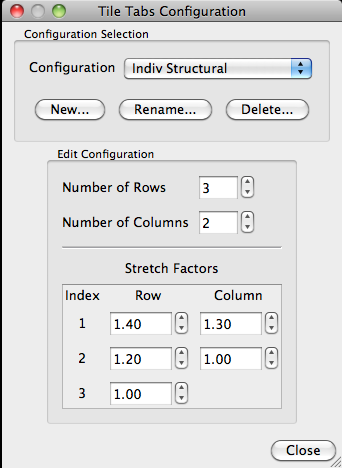

Tile Tabs Configuration
Tile Tabs Configuration contains options for
different ways to display Viewing Tabs in the Viewing
Area.
- Create and Edit… allows the
user to save preferred tab configurations. These are saved
locally on the user’s computer and can be opened between
Workbench sessions. The shortcut
for Create and Edit... Tile Tabs Configuration is Shift + Command/Ctrl + M.
- Select New… to create a new
configuration. Once the new configuration is named, it will
be added to the bottom of the list of options under the Tile
Tabs Configuration menu and will be selected as the current
configuration so that you can interactively adjust the
configuration and see the results (if you are in Tile Tabs
viewing). To edit previously created configurations, select
the desired configuration from the selection box.
- Rename… and Delete…
allow the user to curate the list of Tile Tab
configurations.
- Select/Edit the number of rows and
columns the tabs will be placed in. Stretch
Factors allows for adjustment of the relative size of
the Tile Tabs “panes” for each row and column of panes. When
entered, the values are automatically saved to your local
preferences.

- All Tabs (Default) will put all
opened Viewing Tabs into the viewing area with the default
settings being equally sized partitions. (i.e. 3-4 tabs = 2
rows 2 columns, 5-6 tabs = 2 rows 3 columns; 7-9 tabs = 3 rows
3 columns).
- From Scene: is automatically
selected when a scene that has Tile Tabs
utilized, is opened. This option can be
selected/deselected but not edited.